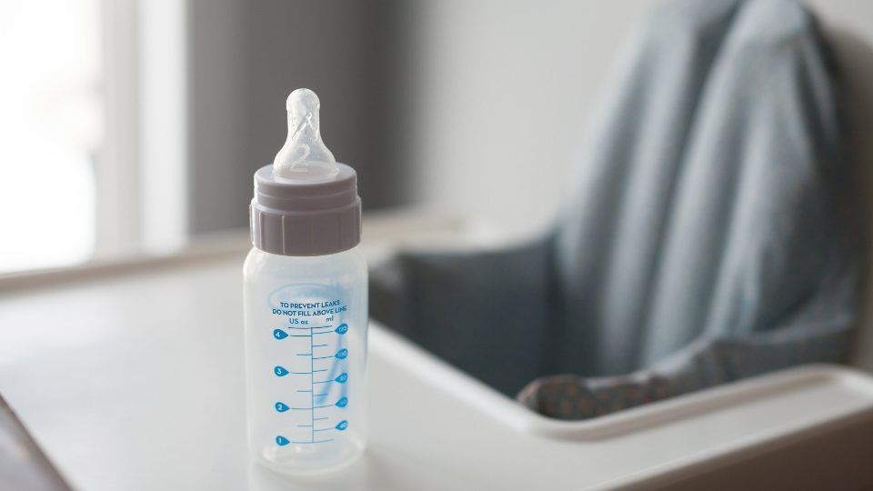

Kit d'urgence 72 h et enfants à l'école : préparer sa famille
En cas de crise majeure, l'école applique le PPMS et prend en charge les élèves. N'allez pas chercher vos enfants sans consigne des autorités : vous risqueriez de vous exposer au danger et d'encombrer les axes et les secours. Préparez votre kit d'urgence 72 h en pensant aux enfants et expliquez-leur calmement les consignes.
Informations pratiques, sources officielles (SGDSN (Guide Tous responsables, 20/11/2025), Ministère de l'Éducation nationale (PPMS), Géorisques, info.gouv.fr). Elles ne remplacent pas les consignes des autorités. En cas d'urgence, appelez le 112 et suivez les consignes de la préfecture, de la radio et de FR-Alert.
Le PPMS à l'école : pourquoi ne pas aller chercher ses enfants
Chaque école ou établissement dispose d'un plan particulier de mise en sûreté (PPMS) adapté aux risques locaux (inondation, accident industriel, tempête, menace sécuritaire). Les personnels encadrent les élèves et appliquent le confinement ou l'évacuation selon les consignes des autorités.
En cas d'alerte ou de crise, n'allez pas chercher votre enfant à l'école tant que les autorités ne l'autorisent pas. Se déplacer sous la pluie, la fumée ou l'alerte augmente le risque d'accident et bloque l'accès des secours.
- Laissez les lignes libres : n'appelez pas l'école en boucle afin de ne pas saturer le téléphone ni gêner la gestion de crise.
- Suivez les canaux officiels : écoutez la radio, surveillez info.gouv.fr et les alertes préfectorales ou FR-Alert.
- Vérifiez les consignes locales : consultez le plan familial de mise en sûreté et les informations transmises par l'établissement.
Parler des risques aux enfants sans les inquiéter
Parler de préparation à la maison aide les enfants à comprendre les règles sans vivre dans la peur. Utilisez des mots simples et des repères concrets, adaptés à leur âge.
- Expliquez l'utilité du kit : présentez le sac comme un outil pratique pour tenir trois jours en cas de coupure d'eau ou d'électricité, au même titre qu'un détecteur de fumée.
- Montrez les gestes d'alerte : expliquez le son des sirènes ou des notifications d'urgence et rappelez qu'il faut écouter les adultes et les consignes officielles.
- Entraînez-vous calmement : repérez ensemble où se trouve le kit et vérifiez qu'ils savent allumer une lampe de poche sans jouer avec les équipements.
Évitez de relayer des rumeurs ou des images anxiogènes devant les plus jeunes : appuyez-vous uniquement sur des informations vérifiées.
Adapter le kit d'urgence 72 h aux enfants
Le socle du kit d'urgence 72 h couvre les besoins de base (eau, alimentation sans cuisson, lampe, radio à piles, trousse de secours, papiers). Ajoutez des éléments adaptés à l'âge de chaque enfant.
Réconfort et calme
- Un doudou ou petit objet rassurant
- Jeux calmes, crayons ou carnet sans pile
Vêtements et hygiène
- Vêtements chauds et chaussures adaptées
- Lingettes, mouchoirs, couches ou rechanges
Santé et repères
- Traitement éventuel et copie de l'ordonnance
- Carte avec noms et téléphones des proches
Questions fréquentes
Dois-je aller chercher mon enfant à l'école lors d'une alerte ?
Non, sauf consigne expresse des autorités. L'école met en œuvre son PPMS pour protéger les élèves sur place, et vos déplacements peuvent vous mettre en danger ou gêner les secours.
Comment savoir si mon enfant est en sécurité pendant une crise ?
Suivez les informations officielles diffusées par les autorités, la préfecture ou l'établissement, et gardez les lignes téléphoniques disponibles pour les urgences. N'allez pas sur place sans autorisation.
Que mettre dans le kit d'urgence pour un enfant ?
Prévoyez de l'eau, des aliments sans cuisson adaptés à son âge, des vêtements chauds, un éventuel traitement médical avec ordonnance, de quoi s'occuper calmement et une fiche avec les coordonnées des parents.
Comment aborder le sujet avec un jeune enfant ?
Restez calme et factuel. Expliquez que le kit sert à attendre tranquillement que tout rentre dans l'ordre et que les adultes suivent des règles prévues à l'avance.
À lire aussi
 Plan familial de mise en sûretéOrganiser son plan familial de mise en sûreté : qui fait quoi, point de rendez-vous, contacts utiles et articulation avec le kit d'urgence 72 h.
Plan familial de mise en sûretéOrganiser son plan familial de mise en sûreté : qui fait quoi, point de rendez-vous, contacts utiles et articulation avec le kit d'urgence 72 h. Kit de survie 72 h : la listeListe complète du kit d’urgence 72h du gouvernement : eau, nourriture, radio, trousse… Version claire + checklist interactive gratuite adaptée à votre foyer.
Kit de survie 72 h : la listeListe complète du kit d’urgence 72h du gouvernement : eau, nourriture, radio, trousse… Version claire + checklist interactive gratuite adaptée à votre foyer.
Avec un bébéCouches, lait infantile, eau pour les biberons, petits pots, carnet de santé : ce qu'il faut ajouter au kit d'urgence 72h quand on a un bébé. Alerte FR-AlertMessage FR-Alert reçu ? Ce que signifie l'alerte, pourquoi elle sonne même en silencieux, les bons réflexes et pourquoi ne pas la désactiver.
Alerte FR-AlertMessage FR-Alert reçu ? Ce que signifie l'alerte, pourquoi elle sonne même en silencieux, les bons réflexes et pourquoi ne pas la désactiver.